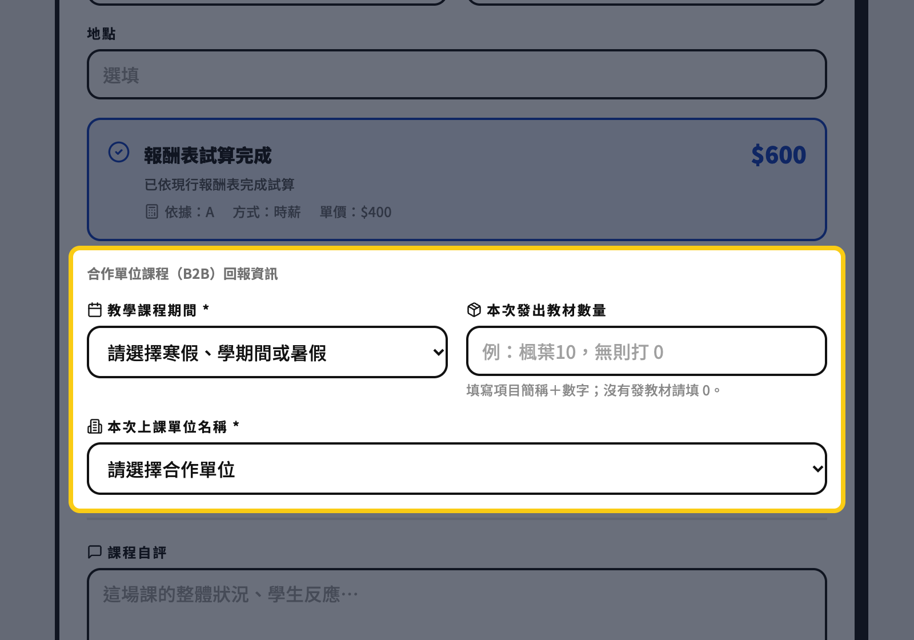
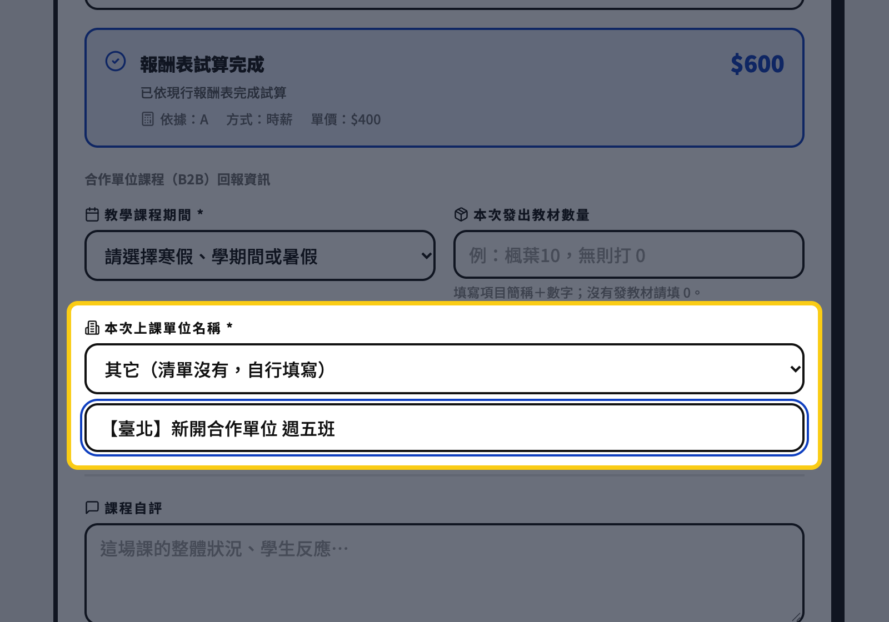
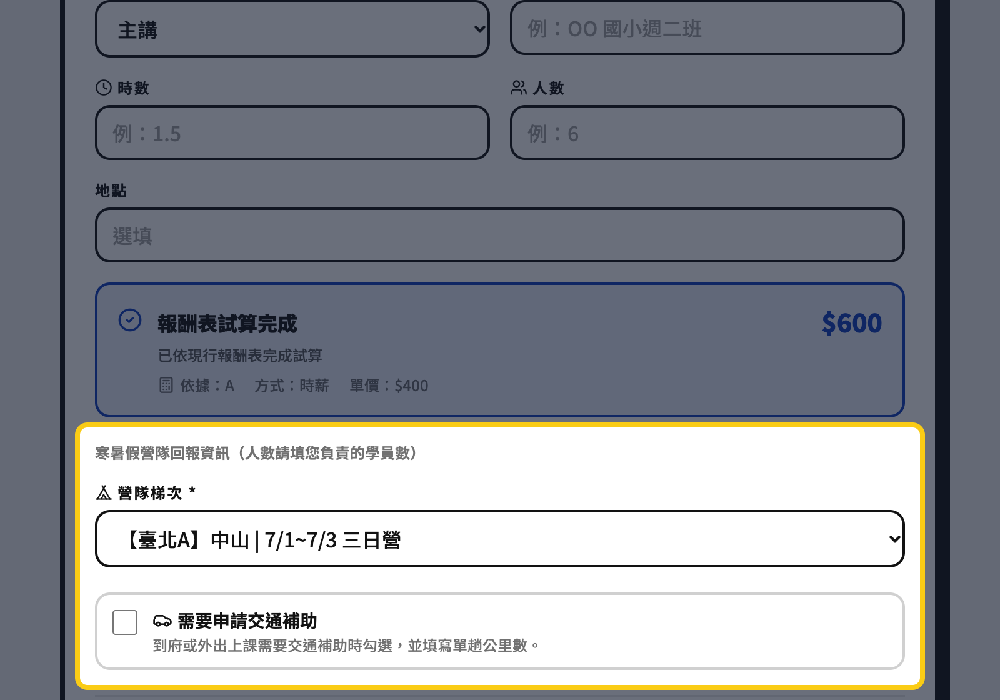
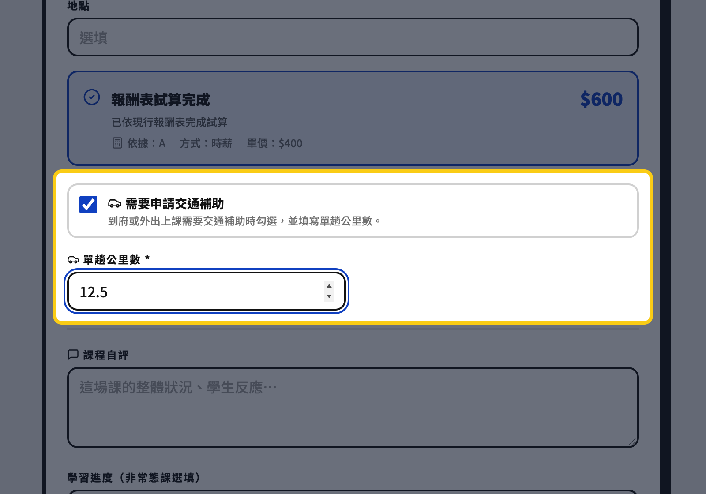
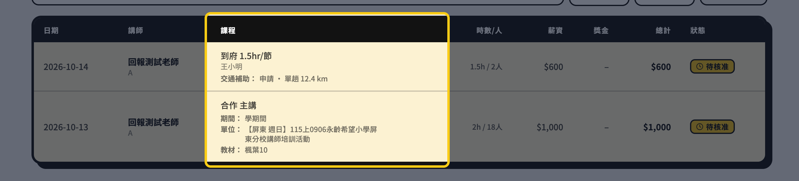

在「我的報酬 → 登記課程回報」，課程類型選合作 主講。
黃框裡會多出三格：這學期是寒假、學期間還是暑假；去哪個單位上課；這次發了多少教材。照 Google 表單的問法填就好。

「本次上課單位」是下拉選單，先從清單挑。
如果找不到，選最下面的「其它」，下方就會多出一格，直接打單位全名與班別就能送出。

課程類型選冬夏令營，黃框裡會出現「營隊梯次」，從清單選您帶的那一梯。
梯次下面是「申請交通補助」的勾選區，需要的話再勾。

課程類型選到府 1.5hr/節，勾起「需要申請交通補助」，旁邊就會跳出「單趟公里數」。
只填去程的公里數（例如 12.5），來回不用乘二；沒勾就不用填。

管理員在後台「薪資登記中心」的明細表，「課程」那一欄會直接列出：期間、上課單位（營隊是梯次）、教材數量、交通補助與公里數。
這些是給核薪對照用的資訊，不會自動改變薪資金額。